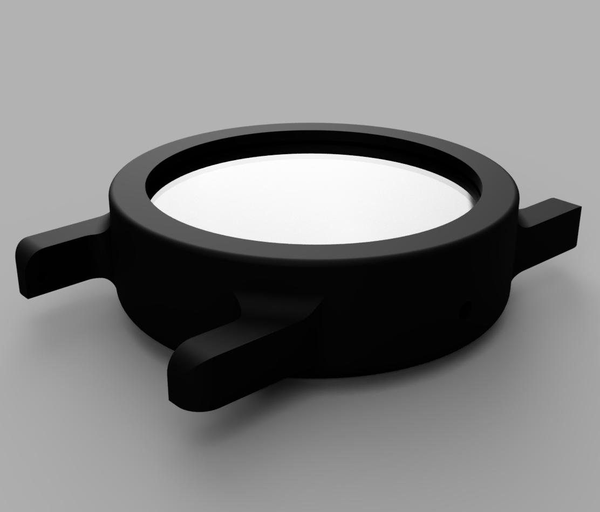

This website is also a current Project of mine. It is hosted on Github pages and is currently written in plain HTML CSS and JS. If you have any suggestions or find any bugs please open an issue on this pages Github repository.
I am currently working on the second version of a diy 3d printed watch. It is based on a Miyota 8n24 Movement.The case back is screwed on and the mineral watch glass is inserted while printing. I plan on making the back also transparent, but i wan't to get the first prototype done first and then worry about some cosmetic changes. Down below you can see a render of the case.
